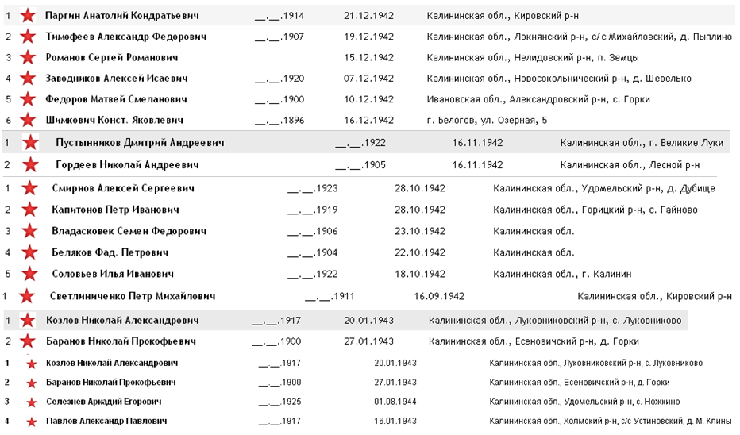
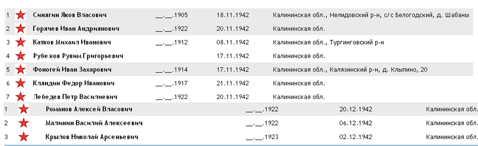
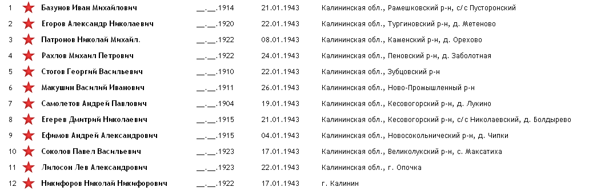
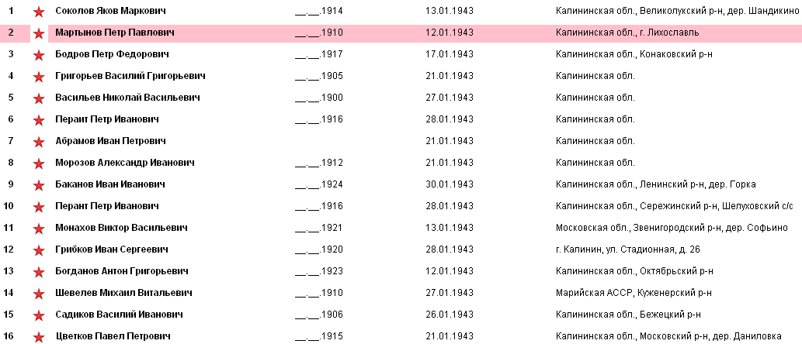
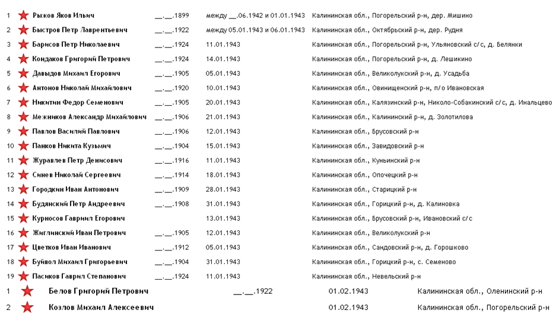

|
Битва за Сталинград, начавшаяся 17 июля 1942 г., имела стратегическое значение. От её исхода зависело, кто будет иметь доступ к нефтяным районами Кавказа и богатым сельскохозяйственным районам Дона и Кубани.
В результате тяжёлых боёв к началу зимы советским войскам удалось остановить наступление противника. Оценив обстановку и общее соотношение сил, советское командование приступило к подготовке ответного удара, получившего кодовое название «Уран». В ходе операции, проводившейся силами трёх фронтов — Юго-Западного (генерал-полковник Н. Ф. Ватутин), Сталинградского (генерал-полковник А. И. Ерёменко) и Донского (генерал-лейтенант К. К. Рокоссовский), — предполагалось окружить и уничтожить группировку противника под Сталинградом. Для этого на направлении главных ударов было обеспечено двойное и тройное превосходство сил.
В результате контрнаступления, начавшегося 19 ноября 1942 г., войска Вермахта понесли значительные потери, их остатки были оттеснены и блокированы. Проведение операции по уничтожению окружённой группировки под кодовым названием «Кольцо» целиком возлагалось на Донской фронт, в состав которого были преданы все войска, задействованные под Сталинградом. Стремясь минимизировать потери, советское командование 8 января предъявило командующему 6-й армии генерал-фельдмаршалу Паулюсу ультиматум о прекращении сопротивления, который был отклонён по требованию Берлина.
Утром 10 января 1943 г. после артиллерийской подготовки советские войска перешли в наступление, в ходе которого расчленили окружённую группировку на две части. 31 января сопротивление противника в южной части города было сломлено, 6-я армия во главе с самим Паулюсом сдалась в плен. Его примеру последовал командующий южной группировки генерал-майор Ф. Роске.
2 февраля после массированных артиллерийских и авиационных ударов капитулировала северная группа немецких войск под командованием командира 11-го армейского корпуса, генерал-полковника К. Штрекера. Битва под Сталинградом, продолжавшаяся 200 дней и ночей, завершилась полной победой советских войск.
В ходе контрнаступления были полностью разгромлены 32 дивизии и 3 бригады противника, 16 дивизий понесли потери в личном составе от 50 до 75% и утратили боеспособность. Всего за время Сталинградской битвы армии фашистского блока потеряли около 25% сил, действовавших на советско-германском фронте. До 1,5 млн. солдат и офицеров противника было убито, ранено и взято в плен. Огромные потери сил и средств катастрофически отразились на общем положении фашистской Германии. Разгром врага на Волге ознаменовал начало коренного перелома в ходе Великой Отечественной войны и Второй мировой войны в целом.
За боевые отличия, проявленные в ходе Сталинградской битвы, 55 соединений и частей были награждены орденами, 213 преобразованы в гвардейские, 46 получили почётные наименования Сталинградских, Донских, Среднедонских, Тацинских, Кантемировских и др.
22 декабря 1942 г. была учреждена медаль «За оборону Сталинграда», которую получило более 750 тыс. защитников города.
8 мая 1965 г. Сталинграду было присвоено звание «Города-героя».
Источник: http://www.prlib.ru/History/Pages/Item.aspx?itemid=410
Свой вклад в победу под Сталинградом внесли бойцы и командиры Красной Армии, уроженцы Калининской области. Мужественно, проявляя массовый героизм и самопожертвование, сражались там воины частей и соединений, которые были сформированы на территории нашей области.
138 стрелковая дивизия.
Дивизия сформирована на базе 301 стрелкового полка 48 стрелковой дивизии им. М.И.Калинина в Калининской области (Ржев, Зубцов) в сентябре 1939 года (7-15.09.1939).
За боевые заслуги в советско - финляндской войне 1939 - 1940 годов награждена орденом Красного Знамени. В апреле 1941-го дивизия переформирована в горнострелковую и до марта 1942 года существовала как 138-я горнострелковая дивизия .
С июня 1941 и до января 1942 года занимала оборону на границе с Турцией, затем входила в состав войск 51-й , 44-й, 64-й армий. В их составе участвовала в оборонительных боях в Крыму, на Таманском полуострове и Северном Кавказе.
Принимала участие в Сталинградской битве. Была передана из состава 64-й в 62-ю армию. В ночь с 15 на 16 октября переправила через Волгу в Сталинград все свои три стрелковых полка. Командующим 62-й армии 138-й стрелковой дивизии полковника Ивана Ильича Людникова была поставлена задача оборонять завод «Баррикады».
Утром 14 октября 1942 года, сосредоточив на фронте около 4 километров три пехотные и две танковые дивизии, используя более тысячи самолетов 4-го воздушного флота Люфтваффе, 6-я общевойсковая армия Вермахта бросила их в наступление, нанося главный удар в общем направлении на тракторный завод и завод «Баррикады».
Только к концу дня 11 ноября 1942 года войскам противника удалось захватить южную часть завода «Баррикады» и на участке шириной в 500 м прорваться к Волге.
Отрезанная от главных сил 62-й армии, полуокруженная, не имея тылов и снабжения, отражая удары с севера, запада и юга, 138 СД в течение 40 дней продолжала сражаться с подразделениями трех фашистских дивизий и удерживала за собой небольшой плацдарм, так называемый «Остров Людникова» - 700 м по берегу Волги и 400м. в глубину от берега Волги к заводу «Баррикады». Не хватало боеприпасов, продовольствия. Люди голодали. Комдив Людников И.И. приказал экономить каждый патрон и установил дневной паек продуктов для каждого: 25 г сухарей, 10 г. сала, 12 г крупы, 5 г сахара, а также патронов по 20-30 штук.
21 декабря 1942 г. части дивизии перешли в наступление и ликвидировали блокаду «острова Людникова» с юга. В ходе боев за «остров Людникова» 138-я дивизия понесла большие потери.
За три месяца боев в городе дивизия уничтожила 7500 солдат и офицеров противника, 22 танка, 66 минометов, 113 пулеметов, уничтожила или разрушила 226 дзотов и блиндажей, захватила 70 пленных, 13 орудий, 22 миномета и 64 пулемета (ЦАМО, ф.1205, оп.1,д.2,л.25)
Военный совет 62 армии дал высокую оценку 138 стрелковой дивизии: «Стойкая в обороне, первая в наступлении. Участок земли, который обороняла дивизия, явился одним из тех недоступных бастионов, из которых состоит волжская твердыня».
До 10 января 1943 г. дивизия вела наступление в районе «Баррикад», в ночь на 11 января 1943 г. по приказу командарма вступила в бой районе завода «Красный Октябрь».
31 января 1943 года дивизия была выведена из боя и 6 февраля 1943 г. вошла в резерв Ставки Верховного Главнокомандования. В этот же день приказом НКО №56 за мужество и стойкость, дисциплину и организованность, за проявленное воинское мастерство и героизм личного состава была преобразована в 70-ю гвардейскую Краснознаменную стрелковую дивизию.
Погибли в Сталинградской битве:

7-й танковый корпус, командир генерал-лейтенант танковых войск Ротмистров Павел Алексеевич.
23 мая 1942 года на базе 3-ей гвардейской танковой бригады в городе Калинине был создан 7-й танковый корпус, который начал свою боевую деятельность с исторической битвы под Воронежем. В течение месяца корпус вел тяжелые и ожесточенные бои в районе Землянска с танковой группировкой противника.
25 августа 1942 года Ставка решила 7-й танковый корпус перебросить под Сталинград. Корпус в составе 1-й Гвардейской армии сходу перешел в наступление. В этих боях корпус потерял 156 танков из 191. Несмотря на все это, удары 7-го танкового корпуса сыграли положительную роль.
После этих тяжелых боев корпус был выведен во второй эшелон и 24 сентября снова вступили в бой в районе Ерзовки.
Затем корпус вышел из подчинения Сталинградского фронта и 6 октября сосредоточился в районе Саратова для получения материальной части и укомплектования личного состава.
Второй раз 7 Танковый Корпус появился под Сталинградом 7 декабря 1942 г. в составе 5 Ударной Армии. Где он сражался до 31 декабря 1942 г.
В течение 12-15 декабря корпус ликвидировал важный плацдарм противника на реках Дон и Чир в районе Рычковский-Верхне Чирский. Вскоре после этого 7-й танковый корпус вел ожесточенные бои против Котельниковской группировки Манштейна.
Корпус 29 декабря 1942 года освободил город КОТЕЛЬНИКОВО от немецко-фашистских захватчиков.
Приказом НКО СССР № 413 от 29 декабря 1942 года 7-й танковый корпус был преобразован в 3-й гвардейский танковый корпус за мужество и героизм личного состава, проявленные в ходе Сталинградской битвы.
119 стрелковая дивизия (2 Ф) – сформирована в апреле – июле 1942 г. на базе 51 стрелковой бригады в г. Калязине. С декабря 1942 г. по май 1945 г. командир – генерал Данилов Михаил Матвеевич. В сентябре 1942 г. в составе 5 ТА в резерве ставки ВГК, в октябре – на Брянском фронте (5 ТА), ноябре – на Юго-Западном фронте. В ноябре 1942 года войска фронта во взаимодействии с войсками Сталинградского и Донского фронтов перешли в контрнаступление под Сталинградом.
Погибли в Сталинградской битве:

Погибли в Кагановическом р-не, х. Зимний.
260 стрелковая дивизия (2Ф, формировалась не на территории области, но в её составе сражались сотни наших земляков).
Дивизия была поднята ночью по тревоге и направлена на погрузку в железнодорожные эшелоны. 15 сентября 1942 года дивизия прибыла на станцию Иловля и, выгрузившись, форсированным маршем в 150 км направилась к месту назначения на Сталинградский фронт в район н.п. Котлубань северо-западнее города Сталинград и вошла в состав 1 гв. Армии генерала Москаленко К.С.
Прибыли 19 сентября, расположившись возле станции Котлубань. В этот же день началось наше наступление под непрерывной бомбежкой немецкой авиацией с утра до позднего вечера. В начале октября 1942 года 1 гвардейская армия была расформирована, а 260 с.д. передана в состав 24 армии Сталинградского фронта, где и вела боевые действия.
19 января 1943 г. дивизия начала наступление в направлении хутора Бородкин, разъезд 564-го километра. Преодолевая сопротивление противника, дивизия 26 января 1943 г. овладела н.п. Городище, 28 января - поселком СТЗ, 29 января - пос. "Баррикады", окончательно овладев последним 2 февраля 1943 г.
В ночь на 2 февраля 1943 года действием разведгруппы 1028 с.п., возглавляемой ст. лейтенантом Трашковым, взяты в плен командование и штабные офицеры 60-й Гренадерской пехотной дивизии.
В 14.00. 2 февраля 1943 г. по приказу командующего генерал-полковника К.К. Рокоссовского боевые действия в г. Сталинграде прекращены. Окруженная группировка 6 немецкой армии была разгромлена, а ее командующий генерал-фельдмаршал Паулюс вместе с генералами и 91 тыс. солдат и офицеров пленены.
В составе 24 армии 260 с.д. находилась с октября 1942 г. по февраль 1943 г.
В составе дивизии в ходе Сталинградской битвы погибли более 120 наших земляков, в р-не ст. Котлубань Самофаловского р-на, на территории Городокского р-на Сталинградской области.
Погибли в Сталинградской битве:

25 гв. стрелковая дивизия.
Сформирована в период с 24.04.1942 по 12.07.1942 года согласно Директиве ГШКА N орг/2/783669 от 16.04.1942, путём преобразования 2-й гвардейской стрелковой бригады. на станции Сонково Калининской области. 11-12.07.1942 г дивизия убыла с места формирования на Воронежский фронт, прибыла в состав фронта 22.07.1942 г. До 04.08.1942 года готовилась к обороне рубежа по восточному берегу реки Битюг.
Участвовала в боях по захвату плацдармов на реке Дон севернее города Коротояк в августе 1942 года.
Погибли в Сталинградской битве:

27 гв. стрелковая дивизия.
23.5.42г. после боёв сосредоточилась в посёлках Трофимково, Лукино, Бураково, Конкое. (8 км восточнее Селижарово) на переформирование.
7.6.42 г. Военный совет Калининского фронта вручил дивизии гвардейское знамя.
С 13.6.42 г. 27 гв. сд вошла в состав группы войск резерва Калининского фронта.
9.8.42г 27 гв. сд выйдя маршем к ст. Селижарово, погрузилась в эшелоны и убыла в распоряжение Ставки ВГК по маршруту Калинин, Москва, Рузаевка, Ртищево, Поворино, Иевля.
16.8.42г. 27 гв. сд вступила в состав 1 гвардейской армии Сталинградского фронта.
В августе 1942 года дивизия насмерть стояла на рубеже станица Сиротинская – хутор Нижнее-Гниловский на направлении главного удара 6-й армии на Сталинград. В этих боях военный комиссар дивизии, будущий Герой Советского Союза Никольский Николай Сергеевич (С 1938 года был секретарём Калининского обкома комсомола) постоянно бывал в полках, у артиллеристов, бронебойщиков, лично руководил отельными оборонительными рубежами.
14.10.42г. 27 гв. сд перешла в состав 24 армии.
18.10.42 г. 27 гв. сд передислоцируется в район ст. Котлубань, где входит в состав 66 Армии.
До 4.02.43 г. 27 гв. сд участвовала в ликвидации Сталинградской группировки противника, при этом с 30.10.42г. по 8.11.42 г. 27 гв. сд передислоцировалась в район станицы Клётская, где вошла в состав 65 Армии.
В августе – декабре в составе дивизии погибли 59 наших земляков, в первые два месяца 1943 – ещё 21.
Погибли в Сталинградской битве:

Так что не только наступательные боевые действия войск Калининского фронта в операции «Марс» способствовали победе под Сталинградом. За коренной перелом в ходе всей войны своими жизнями заплатили тысячи наших земляков, сражавшихся на Сталинградском фронте. Мы должны их знать и помнить о них.
В двадцати двух из двадцати трех гвардейских стрелковых дивизиях, принимавших участие в Сталинградской битве, сражались и погибали наши земляки.
В Книге Памяти Тверской области у 2025 чел. записано место захоронения: г. Волгоград и Волгоградская область. Добавьте такое же число пропавших там без вести, попавших в плен, тех, кто до сего дня не учтен в КП и можно будет судить о количестве воинов, уроженцев Калининской области, павших в боях за Сталинград.
|